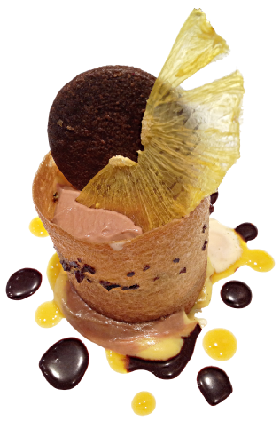
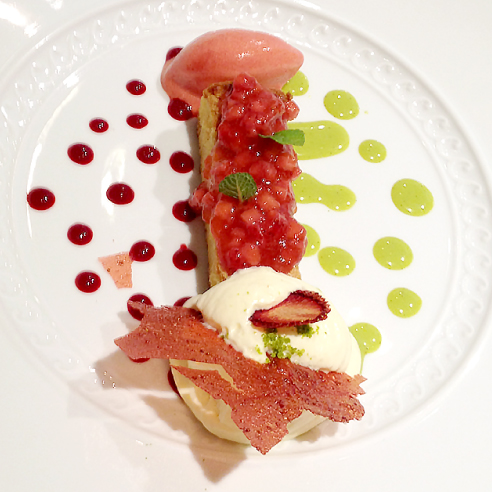

<!DOCTYPE html>
<html>

<head>
<meta charset="UTF-8">
<title>具有動態動作的投影片</title>

<link rel="stylesheet" href="css/common.css" type="text/css">

<script src="js/jquery.min.js"></script>
<script src="js/jmpress.js"></script>
</head>

<body>
<!-- 畫面下方的導覽列 -->
<nav>
<ul class="nav">
<li><a href="#home" class="go">TOP</a></li>
<li><a href="#depth">深度</a></li>
<li><a href="#pan">展延</a></li>
<li><a href="#rotation">回轉</a></li>
<li><a href="#scaling">擴大縮小</a></li>
<li><a href="#image">圖片</a></li>
<li><a href="#usually">普通的投影片</a></li>
<li><a href="#prev" class="go">回上一頁</a></li>
<li><a href="#next" class="go">到下一頁</a></li>
</ul>
<div class="hint">可以透過方向鍵或空白鍵操作。以ESC解除投影片模式。</div>
</nav>

<article class="jmpress">

<!-- TOP -->
<section id="home" data-scale="1">
<h1>JMPRESS.JS</h1>
<p>這是JMPRESS.JS的範例。</p>
<ul class="home-nav">
<li><a href="#depth">深度</a></li>
<li><a href="#pan">展延</a></li>
<li><a href="#rotation">回轉</a></li>
<li><a href="#scaling">擴大縮小</a></li>
<li><a href="#image">圖片</a></li>
<li><a href="#usually">普通的投影片</a></li>
</ul>
</section>

<!-- 深度 -->
<section id="depth" data-z="2000">
<h1><strong>深度</strong>表現！！</h1>
</section>

<!-- 平移 -->
<section id="pan" data-y="600" data-x="-700" data-z="1000">
<h1>也可以<strong>上下左右平移</strong></h1>

<!-- 旋轉 -->
<section id="rotation" data-y="100" data-x="-400" data-rotate="90">
<h2><strong>回轉</strong>也可以。</h2>
</section>

</section>

<!-- 放大縮小 -->
<section id="scaling" data-y="700" data-x="-900" data-rotate="180" data-scale=".2">
<h1><strong>大小變更</strong>更是能隨心所欲！</h1>
</section>

<!-- 張貼圖片 -->
<section id="image" data-y="700" data-rotate="180" data-scale=".5">

<p>然後，當然</p>
<h1><span>圖片</span>也可以貼上</h1>
</section>

<!-- 串場 -->
<section id="more" data-y="1115" data-rotate="180">
<h1>那麼就快快來製作看看吧！</h1>
</section>

<!-- 普通的投影片 -->
<section id="usually" data-x="-1000" data-y="-500">
<h1>也可以做出普通的投影片風格。</h1>

<ul>
<li><a href="#home">TOP</a></li>
<li><a href="#depth">深度</a></li>
<li><a href="#pan">展延</a></li>
<li><a href="#rotation">回轉</a></li>
<li><a href="#scaling">擴大縮小</a></li>
<li><a href="#image">圖片</a></li>
<li><a href="#usually">普通的投影片</a></li>
</ul>

<p>不是隨機的配置，舉例來說，如果只在 X 方向錯開配置，也可以做出一般印象的投影片。</p>
</section>

</article>

<script>

$.jmpress('register', 'demo', function() {
var jmpress = this;

//#home 中的操作提示顯示，各步驟中的導覽顯示
var setActive = function(step) {
if ($(step).attr('id') === 'home') {
$('.nav').fadeOut();
$('.hint').stop(true, true).delay(3000).fadeIn();
} else {
$('.nav').fadeIn();
$('.hint').stop(true, true).fadeOut();
}
};

// section 為投影片的單位
var config = {
stepSelector: 'section',
viewPort: {
width: 1000,
maxScale: 1
},
setActive: setActive
};

// 以 esc 鍵設定 JMPRESS 的 ON/OFF（ASCII編碼的10進位中27=esc）
$(this).jmpress('toggle', 27, config, true);


// 處理內部連結
$('.go').click(function(e) {
e.preventDefault();
$(jmpress).jmpress($(this).attr('href').slice(1));
});
});

// jmpress 開始
$('.jmpress').jmpress('demo');

</script>


</body>
</html>
